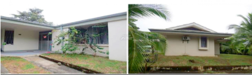

Recope gastará ¢88 millones para remodelar 2 casas
De Presidencia Ejecutiva y la Gerencia de Servicios Técnicos
La Refinadora Costarricense de Petróleo (Recope) se encuentra en trámite de un proceso de contratación para remodelar dos casas que se ubican en Limón.
Según el cartel de licitación, las obras se realizarían para mejorar el valor patrimonial de las propiedades.
“El objeto de este concurso lo constituye la contratación de los servicios de mano de obra, herramientas, equipo y materiales
para el mantenimiento externo e interno de las viviendas N°7 y N°16 en Urbanización Las Lomas, Moín, Limón, a fin de mejorar las condiciones estructurales y arquitectónicas del inmueble aumentando su vida útil y su valor patrimonial”, cita el acta de contratación.
Según la Refinadora, la contratación de estas mejoras se incluyó en el presupuesto del “Plan Anual de Adquisiciones”.
“Asimismo su disponible presupuestario se encuentra debidamente respaldado con la reserva de recurso No. 5001080101, que garantiza los fondos suficientes para honrar los compromisos económicos que se requieran durante el presente año de acuerdo con el presupuesto aprobado”, justifica la institución.
CASAS
Dentro de la documentación que publica Recope en el Sistema Integrado de Compras Públicas (Sicop), no se especifica cuál es el uso que le dan a las casas, sin embargo, el documento “Decisión final para contratar a través de Sicop”, dice que los trabajos se harían en “la casa de la Gerencia de Servicios Técnicos y de la casa Presidencia Ejecutiva en Urbanización Las Lomas, Limón”.
El monto total de las obras se divide en dos subpartidas, la primera de ellas es de ¢53.062.18 y la segunda por ¢35.374.787,
ESPECIFICACIONES
En el documento técnico, se menciona que las viviendas necesitan de varios trabajos, entre ellos pintura total, cambio de techos en ambas construcciones, así como trabajos de reparación de la instalación eléctrica, agua potable y de aguas residuales.
“Se debe aplicar fumigación a toda la estructura de techo, marcos de puertas y ventanas, closets u otras estructuras de madera existentes y piezas a cambiar, con una mezcla de Dragner y Diesel”, cita el documento.
Según los datos publicados en el Sicop, el cierre de ofertas para el concurso de la remodelación se extendería hasta el jueves 11 de febrero.
El cronograma de las obras menciona que los trabajos tendrían un plazo de entrega de 120 días, es decir aproximadamente 4 meses.
Información tomada de: diarioextra.com
